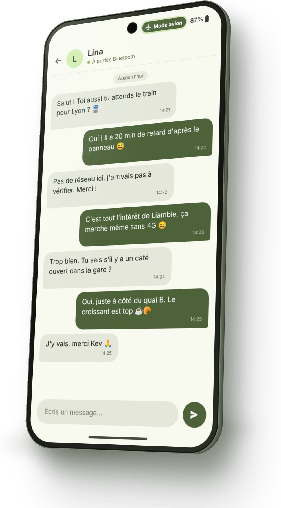

Parle à ceux qui sont autour de toi.
Liamble est une messagerie anonyme qui fonctionne par Bluetooth, sans internet, sans compte et sans serveur. Idéale dans une gare, un aéroport, un avion, un cinéma ou partout où le réseau manque.
Talk to the people around you.
Liamble is an anonymous messaging app that works over Bluetooth, with no internet, no account and no server. Ideal in a station, an airport, a plane, a cinema, or anywhere the network is missing.
Comment ça marche
- Choisis un pseudo : seules les personnes à portée de Bluetooth peuvent te voir.
- Une liste des personnes à proximité qui utilisent Liamble s'affiche.
- Touche un pseudo pour discuter. Tes messages restent sur ton appareil.
- Mode invisible, blocage et notifications de nouveaux messages inclus.
Quand une personne s'éloigne hors de portée, la conversation se grise et reprend dès qu'elle revient.
How it works
- Pick a nickname: only people within Bluetooth range can see you.
- A list of nearby people using Liamble appears.
- Tap a nickname to chat. Your messages stay on your device.
- Invisible mode, blocking and new-message notifications included.
When someone goes out of range, the conversation turns grey and resumes when they come back.